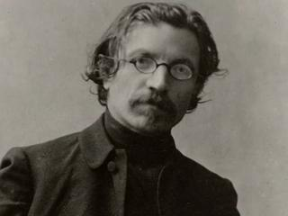

Who is this?

Sholem Aleichem
One of the most prominent Yiddish writers, often consider the father of Yiddish literature. Is among the famous "three:" Mendele Mocher Sforim, Sholem Aleichem, and IL Peretz. The musical "Fiddler on the Roof" is based off Sholem Aleichem's "Tevye."